Note
Refer to IEEE 802.1Qbv Demo 3 Scenario 1.1 No Time-Aware Traffic Scheduling (No Scripts) to complete this step manually, instead of using scripts.Refer to Demo 3: IEEE 802.1Qbv Time Aware Shaper for a detailed description of the software components of the boards used.
This scenario has no time-aware traffic scheduling; both taprio qdisc and LaunchTime are disabled. With taprio qdisc and LaunchTime disabled, this scenario determines the baseline inter-packet latency distribution for scheduled traffic when only mqprio qdisc (multiqueue priority) is used.
Note
- This section uses enp1s0 as the Ethernet controller device interface name associated with Intel® Ethernet Controller I210. The Ethernet device name may vary from board to board. Use ifconfig or ip addr to display the list of Ethernet devices on your board.
- For clarity, assign a name to each terminal on XFCE. Refer to Name a Terminal in XFCE. This demo lists the names of the terminals above each command.
- [Board A] Start a new terminal and name it (Shift-Ctrl-S)
Synchronization. Check if any
qdisc is running on
Board A.
[Board A] Synchronization Terminal
$ cd ~ $ tc qdisc show dev enp1s0
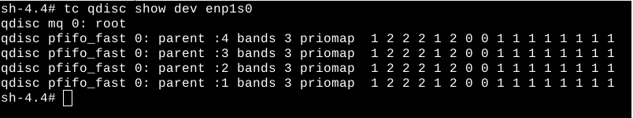The screenshot above shows no qdisc being installed except for the default pfifo_fast qdisc. If other qdisc are installed besides the default, delete all of them by running the command below. Otherwise, skip this step.
$ tc qdisc del dev enp1s0 root This step runs a script to:
- Set an IP address for Board A
- Set VLAN interface
- Enable real-time scheduling
[Board A] Synchronization Terminal
$ cd /opt/intel/iotg_tsn_ref_sw/scripts $ chmod a+x setup_generic.sh $ ./setup_generic.sh -i enp1s0 -b boardA -v
Where
Argument Description -i enp1s0 Specify to use interface enp1s0 -b boardA Specify that the script is running on board A -v Set up VLAN interface
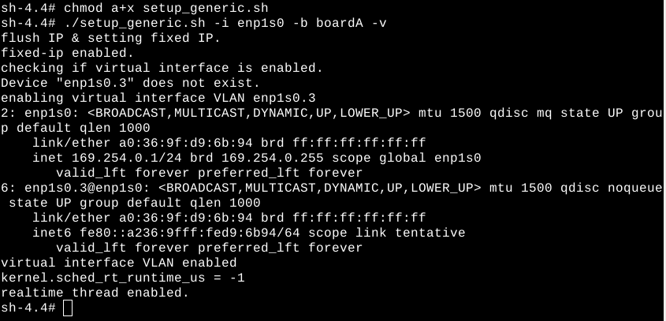- [Board A]
Start ptp4l and phc2sys on Board A.
[Board A] Synchronization Terminal
$ cd /opt/intel/iotg_tsn_ref_sw/scripts $ chmod a+x setup_sync.sh $ ./setup_sync.sh -i enp1s0.3 -b boardA
WhereArgument Description -i enp1s0.3 Specify to use interface enp1s0.3 -b boardA Specify that the script is running on board A ptp4l will be started immediately. Then, a terminal prompt requests user to press Enter to start phc2sys. Press Enter to launch the phc2sys terminal and proceed.
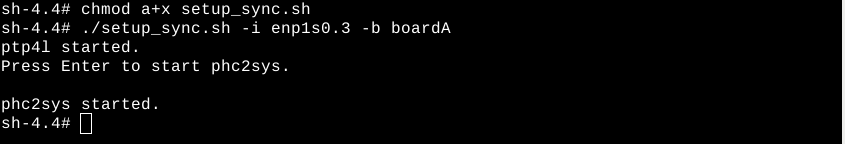The ptp4l log message and phc2sys log messages are displayed on two terminals.
The script does the following:
- Sets an IP address for Board B
- Sets the VLAN interface
Start a new terminal and name it (Shift-Ctrl-S) Synchronization Terminal
[Board B] Synchronization Terminal$ cd /opt/intel/iotg_tsn_ref_sw/scripts $ chmod a+x setup_generic.sh $ ./setup_generic.sh -i enp1s0 -b boardB -v
Where
Argument Description -i enp1s0 Specify to use interface enp1s0 -b boardB Specify that the script is running on board B -v Set up VLAN interface
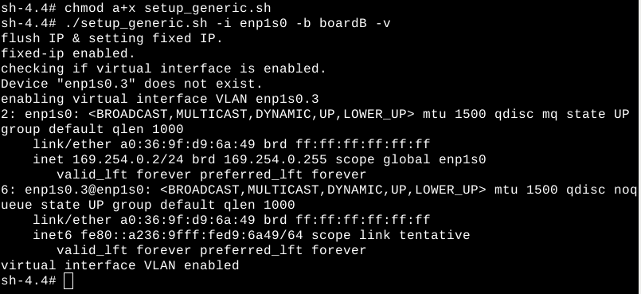- Start ptp4l and phc2sys.
[Board B] Synchronization Terminal
$ cd /opt/intel/iotg_tsn_ref_sw/scripts $ chmod a+x setup_sync.sh $ ./setup_sync.sh -i enp1s0.3 -b boardB
WhereArgument Description -i enp1s0.3 Specify to use interface enp1s0.3 -b boardB Specify that the script is running on board B ptp4l will be started immediately. Then, a terminal prompt requests users to press Enter to start phc2sys. Press Enter to launch the phc2sys terminal and proceed.
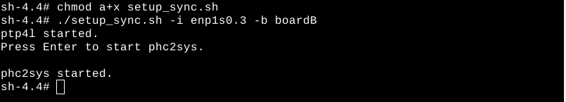The ptp4l and phc2sys log messages are displayed on two terminals.
Note
Completing Steps 1-5 synchronizes time on both boards using the IEEE 1588 PTP protocol. The PTP messages are set up to be transmitted with VLAN headers (VLAN ID=3 and VLAN priority 7). - [Board B]
Start a new terminal and name it (Shift-Ctrl-S) iperf3 Terminal. Run the iperf3 server on CPU core 4 to receive Best Effort packets.
[Board B]iperf3 Terminal
$ cd ~ $ iperf3 -s -A 2
- [Board A] Start a new terminal and name it (Shift-Ctrl-S)
Sample-app-taprio Terminal. Change the directory to sample-app-taprio.
[Board A] Sample-app-taprio Terminal
$ cd /opt/intel/iotg_tsn_ref_sw/sample-app-taprio/ - [Board A] On the Sample-app-taprio Terminal, check that the following for the IEEE 802.1Qbv demo are as intended:
- Priority-to-queue mapping (queue-s1.cfg)
- Transmit window timing (tsn_prio5-s1s2s3.cfg and
tsn_prio3-s1s2s3.cfg)
Note
The default configuration files for this scenario with no time-aware traffic scheduling follow. For a detailed understanding, refer to Transmit Window Configuration for Time-Aware Traffic Scheduling.[Board A] Sample-app-taprio Terminal
--queue-s1.cfg-- # PRIORITY QUEUE [ETF] [DELTA] 5 0 3 1 7 2 --tsn_prio5-s1s2s3.cfg-- cycle_time 1000000 priority 5 number_of_windows 2 window_1_offset 100000 window_1_duration 100000 window_1_packets 1 window_2_offset 600000 window_2_duration 100000 window_2_packets 1 --tsn_prio3-s1s2s3.cfg-- cycle_time 1000000 priority 3 number_of_windows 2 window_1_offset 200000 window_1_duration 100000 window_1_packets 1 window_2_offset 700000 window_2_duration 100000 window_2_packets 1
- [Board A] On the Sample-app-taprio Terminal, execute
scheduler.py to configure mqprio.
[Board A] Sample-app-taprio Terminal
$ python scheduler.py -i enp1s0 -q queue-s1.cfg -e 120Note
-e 120 refers to the number of seconds in the future to start executing Tx schedules/windows without IEEE 802.1Qbv Gate Control List. Based on empirical observations, a value larger than 30 seconds is recommended to allow the adapter finish resetting and PTP clock syncing.
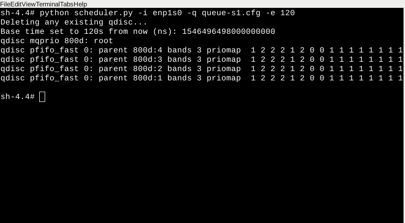Note
The program will generate a base_time file that contains the start time of the cycle.
[Board A] On the Sample-app-taprio Terminal, run sample-app-taprio with VLAN priority 5. In this step, 169.254.0.2 is the base IP Address (enp1s0 not enp1s0.3) for the Board B device. Your IP address may differ.
[Board A] Sample-app-taprio Terminal
$ ./sample-app-taprio -i enp1s0 -c 169.254.0.2 -x 1 -w tsn_prio5-s1s2s3.cfg -B base_time -z 50000 -S &
Where
Argument Description -i enp1s0 Specify interface for AVB connection -c 169.254.0.2 Client IP address -x 1 Set to transmit mode -w tsn_prio5-s1s2s3.cfg Window and packet configuration file -B base_time Use the base time calculated by scheduler.py for starting transmitting cycle -z 50000 Delta from wake up to txtime from user space set to 50 µs -S Send packets without LaunchTime specified You will see the following output:
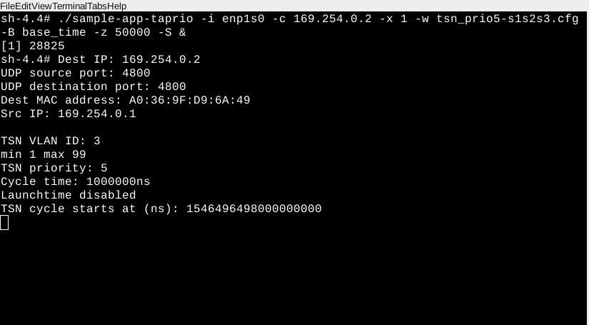If, however, the sample-app-taprio command yields the following error, the issue is likely a lost network connection or the network adapter.
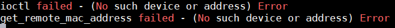Run the command below. Upon successfully passing the ping test, run the sample-app-taprio command again.
$ ping 169.254.0.2- [Board A] On the Sample-app-taprio Terminal, run another instance of sample-app-taprio with VLAN priority 3. In this step,
169.254.0.2 is the IP address for the Board B device.
[Board A] Sample-app-taprio Terminal
$ ./sample-app-taprio -i enp1s0 -c 169.254.0.2 -x 1 -w tsn_prio3-s1s2s3.cfg -B base_time -z 50000 -A 3 -S &
WhereArgument Description -x 1 Set to transmit mode -w tsn_prio3-s1s2s3.cfg Window and packet configuration file -B base_time Use the base time calculated by scheduler.py for starting transmitting scheduled traffic -z 50000 Delta from wake up to txtime from user space set to 50 µs -A 3 Set CPU affinity to 3 -S Send packets without LaunchTime specified
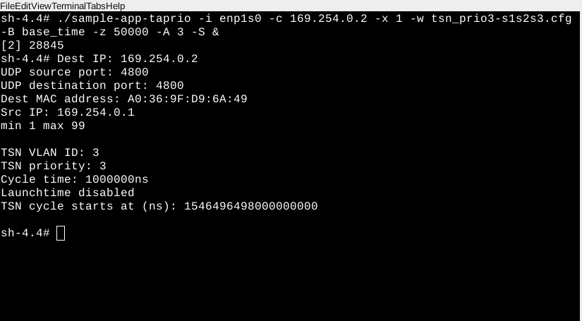 - [Board A] Start a new terminal and name it (Shift-Ctrl-S)
Iperf3 Terminal. Run the iperf3 client on CPU core 2.
[Board A] Iperf3 Terminal
$ cd ~ $ iperf3 -c 169.254.0.2 -t 600 -b 0 -u -l 1448 -A 2WhereArgument Description -c 169.254.0.2 Run iperf3 in client mode, connecting to host 169.254.0.2 -t 600 Specify time to run to 600 seconds -b 0 Set target bandwidth to unlimited -u Stream UDP packets -l 1448 Specify length in buffers to read or write -A 2 Set CPU affinity to 2 - [Board B] Start a new terminal and name it (Shift-Ctrl-S)
Sample-app-taprio Terminal. Change the directory to sample-app-taprio.
[Board B] Sample-app-taprio Terminal
$ cd /opt/intel/iotg_tsn_ref_sw/sample-app-taprio/ - [Board B] On the Sample-app-taprio Terminal, run sample-app-taprio in receiving mode. Let the application run for 2 minutes or longer.
Choose the command based on your requirements for graph plot, graph plot and output, or output only.
[Board B] Sample-app-taprio Terminal
# For graph plotting only (default): $ ./sample-app-taprio -i enp1s0 -x 2 -q "5 3" -y 2 # For graph and standard output logging: $ ./sample-app-taprio -i enp1s0 -x 2 -q "5 3" -y 3 # For standard output logging only: $ ./sample-app-taprio -i enp1s0 -x 2 -q "5 3" -y 1
WhereArgument Description -i enp1s0 Specify interface for AVB connection -x 2 Set to receive mode only -q "5 3" Select to display TSN packets with priority 5 and 3 -y 2 graph only output 3 I/O and graph output
1 I/O only
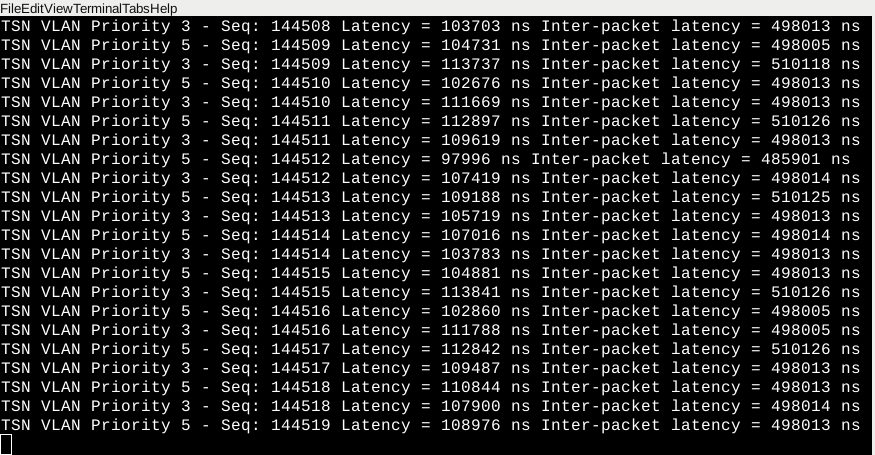 [Board B] Start a new terminal and name it (Shift-Ctrl-S) Plot Terminal. Change the directory to sample-app-taprio.
[Board B] Plot Terminal
$ cd /opt/intel/iotg_tsn_ref_sw/sample-app-taprio/[Board B] [Optional] On Plot Terminal, run plot.sh to display a runtime transmission latency plot for scheduled traffic (VLAN priority = 3 & 5).
Note
The runtime transmission latency plot is for informational purposes only and is not a part of our discussion and result analysis.Note
To terminate the latency plot, select the latency plot graph and then press "c".[Board B] Plot Terminal
$ chmod +x plot.sh $ ./plot.sh -p 5,3 -m 60000
WhereArgument Description -p 5,3 Select to plot packets with VLAN priority 5 and 3 -m 60000 Set the maximum latency Y-axis to 60000 ns [Board B] Plot Terminal
On the Plot Terminal, after running for 2 minutes or longer, press CTRL-C to terminate sample-app-taprio.
- [Board A]
End sample-app-taprio and iperf3 client applications.
[Board A] Any terminal
$ killall sample-app-taprio $ pkill iperf3
[Board B]
On Plot Terminal, run plot-distribution.sh to get the inter-packet latency distribution graph. A copy of the PNG image will be created if the flag "-g" is specified and named as specified in the option "-o".
Note
Generating the plot can take a longer time, depending on the size of data source file (default latencies.dat).Note
The plot distribution scale is not guaranteed to be exactly the same for all test cases. Modify the scale by using the "-m" flag to set the maximum X axis and "-n" flag to set the minimum X axis.Refer to Transmit Window Configuration for Time-Aware Traffic Scheduling.
[Board B] Plot Terminal$ chmod +x plot-distribution.sh # To plot distribution for priority 5 and priority 3 on the same graph $ ./plot-distribution.sh -p 5,3 -g -o latencies-s1-all.png -m 600000 -n 400000 # To plot distribution for priority 5 only $ ./plot-distribution.sh -p 5 -g -o latencies-s1-prio5.png -m 600000 -n 400000 # To plot distribution for priority 3 only $ ./plot-distribution.sh -p 3 -g -o latencies-s1-prio3.png -m 600000 -n 400000
[Board B]
On Plot Terminal, remove all data logging files.
[Board B] Plot Terminal
$ rm *.dat zrx.log
Analyze Network Traffic: Demo 3 Scenario 1: No Time-Aware Traffic Scheduling
The demo scenario has no time-aware traffic scheduling; both taprio qdisc and LaunchTime with etf qdisc are Disabled. For an overview of network traffic analysis, refer to IEEE 802.1Qbv Demo: Analyze the Results.
For instructions on opening a plotted graph image using a viewer, refer to Open an Image Using Ristretto Image Viewer.

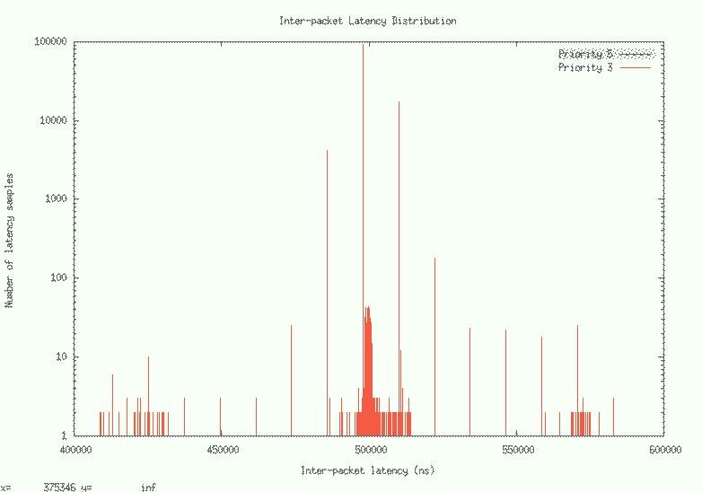
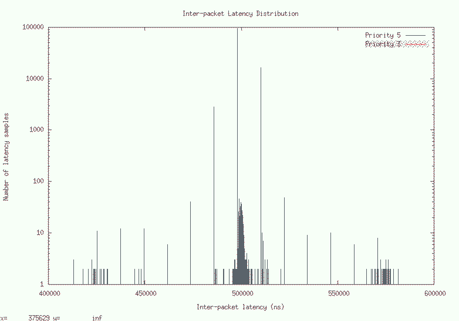
Disclaimer
The results shown here may not be identically reproduced as inter-packet latency is very sensitive and may vary based on the duration of the test and the health and state of the platform.In this scenario with no time-aware traffic scheduling, the baseline inter-packet latency distribution for scheduled traffic uses only mqprio qdisc (multiqueue priority); neither taprio qdisc nor LaunchTime are enabled. The VLAN priority segregates transmit packets into prioritized transmit queues. In this scenario, best effort traffic is the interfering traffic. An Ethernet frame that is scheduled for transmission is transmitted as a whole, irrespective of size. If a best effort frame is in the midst of transmission, the scheduled traffic frame cannot be selected, which eventually leads to increased transmission latency. This is because the Best Effort Ethernet frame must be transmitted completely before the higher priority scheduled traffic Ethernet frame is selected for transmission.
Note
The inter-packet latency plot uses the logarithmic scale in its Y-axis (Number of latency samples).For this scenario, without any of the time-deterministic technologies mentioned above, the distribution of the inter-packet latency for both scheduled traffic (VLAN priority = 5 and 3) has a high sample count at 500 µs, which is the inter-packet cycle time used in this demo. The high sample count (in the range of 300 to 3000) for inter-packet latency is about +/- 20 µs from 500 µs. Such high sample counts outside of the chosen inter-packet cycle time indicate poor precision in hitting the expected 500 µs inter-packet cycle time. Lastly, the sample count reduces to single digit range when the inter-packet latency is +/- further from the chosen inter-packet cycle time.
By using multiqueue prioritization, on average, scheduled traffic is received on time. However, a large amount of scheduled traffic is also received +/- from the chosen inter-packet cycle time.
The inter-packet latency distribution graph show that the inter-packet latency jitter for scheduled traffic (VLAN priority = 5) is smaller compared to inter-packet latency jitter for scheduled traffic (VLAN priority =3). This is because TxQ0 (for VLAN priority = 5 frames) is higher in terms of transmission scheduling priority within Ethernet MAC controller compared to TxQ1 (for VLAN priority =3 frames). The inter-packet latency distribution for the scheduled traffic is poor, as seen from a very wide latency distribution.